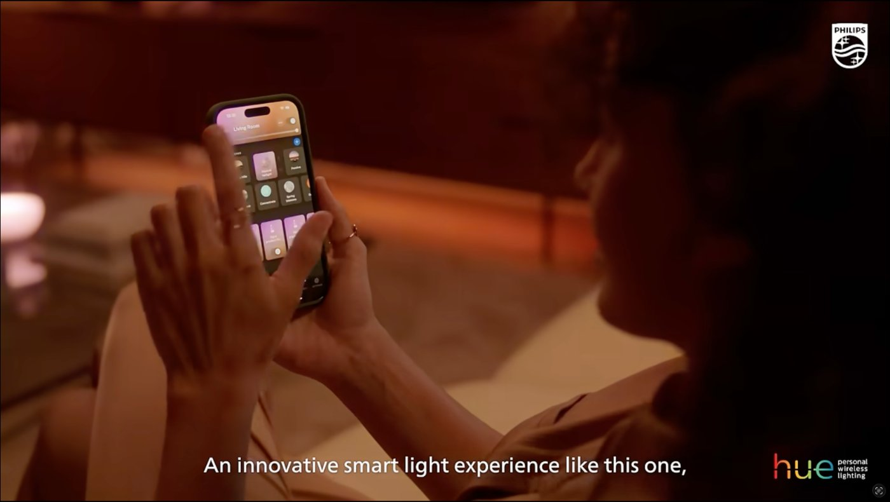

Signify
Leading media strategy across six European markets
My role Senior Strategic Planning Manager at Merkle, Media Strategy Lead on the Signify account across key European markets
Signify is the world’s largest lighting company. The global team owned the brand framework. My responsibility was turning the framework into a working strategy for the UK, DACH, Benelux and the Nordics as the main markets, with Italy and Spain at smaller scale, while the smart lighting category was shrinking and brand investment was reduced quarter by quarter.
- ~€1.9M
- annual media budget for one market alone
- 1.9% lift
- UK YouTube awareness, 24% cheaper CPLU
- 1.3× ROAS
- Performance Max vs text ads
Approach
Keeping the brand coherent across markets of different size. In the UK I costed the audience at each stage of the funnel and focused on the top, putting about 1.4 times more into awareness than the client had recommended. The main job was to grow the number of people entering the “funnel”, not to work harder on retention.
Optimizing the global audience approach for more effective reach. The audience data showed ~30% overlap between personas. From late 2022 the top of the funnel was consolidated across every market into one shared audience with one brand message, while persona and proposition work moved down the funnel.
Running brand communication despite the budget cuts. Competitor tracking showed that almost all paid activity was focused on Q4 with long periods of media silence, so campaigns were launched ahead of competitors and small-budget bursts went into the weeks when nobody else was active.
Aligning the whole team around the strategy. Channel teams were briefed at every stage with the strategic context and the client’s feedback, not only the task. The strategy was executed holistically, not as a collection of plans.
Impact
- A continuous, competitive voice on a smaller budget.
- Roughly six campaign moments per market each year over a permanent always-on layer.
- On our own competitive tracking, Hue held the strongest organic visibility in the category throughout the period.
- Led and coordinated cross-functional teams of up to seven channel specialists and third-party media owners.